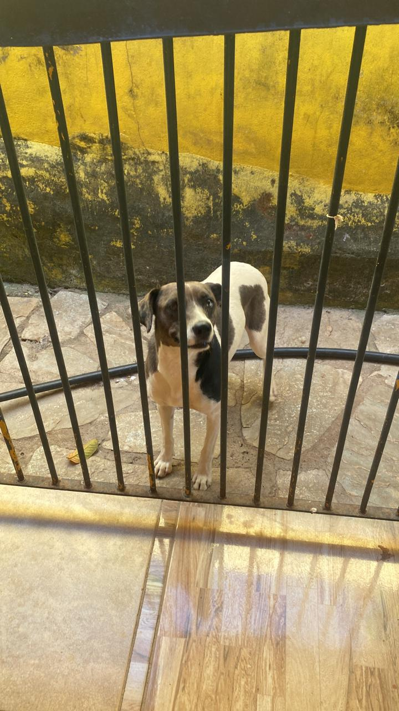
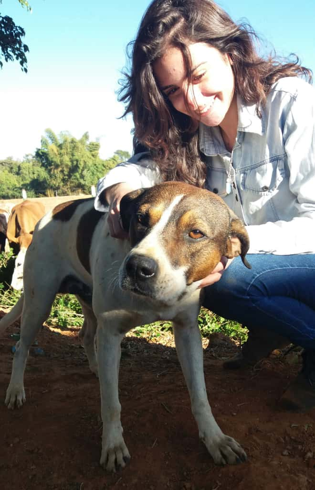

Nossa Missão
A missão da ONG CÃOridade é resgatar, cuidar e encontrar lares amorosos para animais abandonados, promovendo o bem-estar animal e a conscientização sobre a importância da adoção responsável.
Nossa História

A CÃOridade foi fundada em 2010 por um grupo de amantes dos animais que perceberam a necessidade de agir contra o abandono e maus-tratos. Desde então, temos trabalhado incansavelmente para salvar vidas e proporcionar um futuro melhor para cães e gatos em situação de vulnerabilidade.
Nossos Valores
- Compromisso com o bem-estar animal
- Transparência e ética em todas as nossas ações
- Respeito e amor pelos animais
- Engajamento da comunidade na causa animal